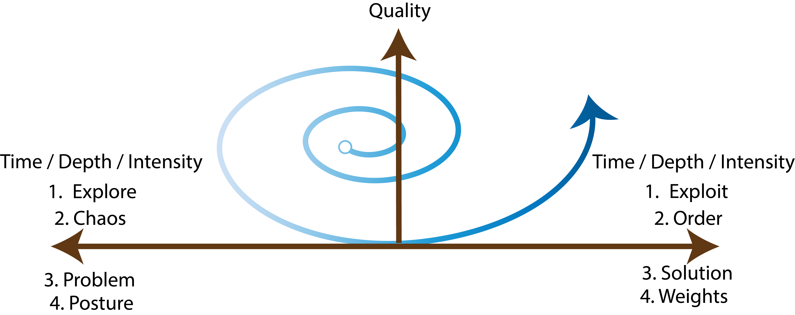
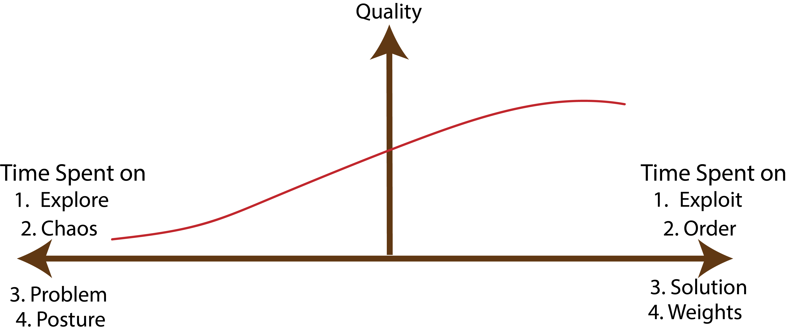
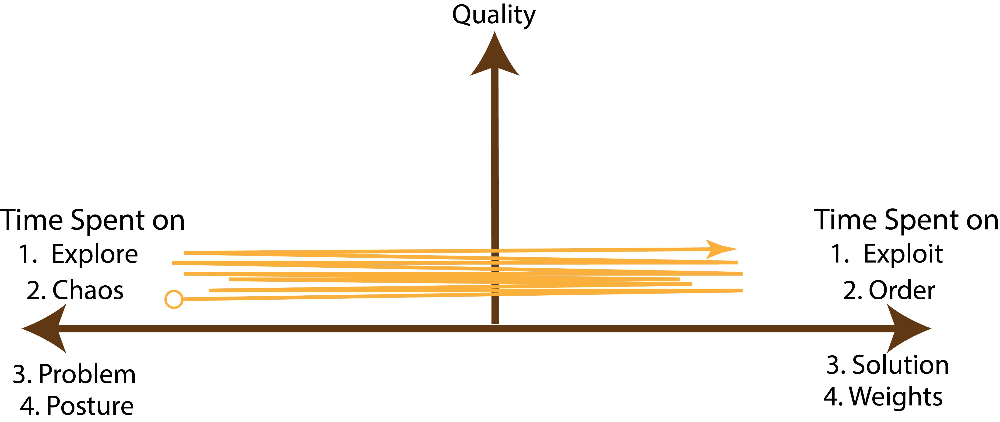

Life is full of choices, and often, we find ourselves torn between two or more equally important options.
Unlike the simple task of distinguishing between good and bad, these dilemmas involve selecting between two positive outcomes.
The one I encounter continuously in my PhD life is the dilemma of choosing between learning new techniques (in mathematics or algorithms) and solving problems.
However, there are many other dilemmas that we face in our daily lives such as:
The good - Spiral model
The key idea behind the spiral model is to master one thing at a time with full intensity and then move on to the other end.
For instance, if I am learning a new technique, I will focus on learning it to the best of my ability.
Then, I will move on to applying it to a problem and then come back to learning it again.
However, every time I arrive to one end of the spiral, I use feedback from the other end to learn/solve things in more depth.
You can understand this concept better from the figure below.

The vertical axis represents the quality of the work and the horizontal axis represents the time spent / intensity of the work on both ends.
The geometry is not perfect1, but it gets to the point.
The important aspect here is that initially the frequency of cycling back and forth is high, but as we progress, it reduces.
At the same time, in the context of my learning vs doing dilemma, the quality of producing new work or the quality of content absorbed increases.
The bad - Linear model
In this model, we tend to progress through distinct stages without adequately accounting for feedback or reflecting on previous experiences. For example - start with learning and then move on to building something while relying only on the knowledge you gained during the learning phase. Similarly, we might focus on perfecting our form in workouts and then continuously add more weights without revisiting our form. This linear progression restricts growth, leading to diminishing returns as we linger on one end for extended periods. Without incorporating feedback and learning from real-world experiences, our progress becomes limited and stagnant. To illustrate, look at the figure below, which shows the quality of work stagnating as we hang around on one side for a long time. 
The ugly - Simultaneous Progress model
This one from a fifty thousand feet view looks like the spiral model. However, when you look closer it is just a lot of context switching without accomplishing anything serious on either side. Based on my past failures, I can say I have plenty of first hand experience with this model. The nefarious thing about this model is that it gives you a false sense of progress as well as satisfaction in the short term. The reason is that you are making progress on both ends, but you are not making any progress in depth or quality. 
Why the simultaneous progress model is ugly
Imagine you are driving a car and you are trying to look at the speedometer, the road and the rear view mirror at the same time. Well, you can't. Simply because you can only focus on your attention one thing at a time. Because it prevents you from focusing on sufficient details and depth. In most of the interesting and intellectual problems, the devil is in the details, but so is the salvation. Furthermore, with modern tools getting better in solving shallow problems, the only way to be valuable is to solve deep problems.
Benefit of the spiral model-1: The starting point doesn't matter
The beauty of the spiral model is that the starting point doesn't determine the ultimate outcome. Therefore, if you can have faith in the spiral model then you don't have to be anxious about the starting point (which I think we do a lot). As we iterate and build upon our experiences, we usually refine our understanding and approach. I plan to write a separate blog post on how spiral models and feedback loops in general should change the way we think about causality.
Benefit-2: The Return on Time Invested Increases with Depth
This is an interesting aspect that has encouraged me to avoid the linear model (to be fair I still do the linear model unintentionally all the time). The main issue with the linear model is the stagnation of quality in the long run. Unlike the linear model, the spiral model forces us to leave the comfort zone and explore or exploit the other end.
The spiral model as a better representation of pendulum theories
The model is not limited to the context of personal growth as we also make decisions at the societal level. Different kinds of cyclical theory of societal evolution has been discussed in the past. One of the most popular is the pendulum theory. The pendulum theory states that the society swings between two extremes for different aspects such as politics, arts, culture etc. A similar idea is also discussed in the context of cyclical theories of history. However, the spiral model is a slightly different take on the cyclical nature of feedback systems. Sure, we do cycle between two extremes, however, every time we cycle we are not the same as the radius of the spiral is increasing. In his book, The Network State, Balaji Srinivasan calls this idea as the "Helix model" of progress. To quote -
A helical view of history, which says that from one viewpoint history is indeed progressive, from another it's genuinely cyclical, and the reconciliation is that we move a bit forward technologically with each turn of the corkscrew rather than collapsing.
Nassim Taleb's barbell strategy
Author Nassim Taleb proposes a "barbell strategy" that closely aligns with the spiral model. The strategy involves having high exposure at the extremes while avoiding the middle. The barbell strategy replicates the cyclical nature of the spiral model - oscillating between two extremes in order to maximize gains. It requires patiently and sequentially exploring the edges without getting stuck in the unrewarding middle. This approach can be applied to many aspects of life. For careers, it may mean avoiding middle manager roles and shifting between independent creative work and high-level executive positions over time.
What can go wrong with the spiral model?
One obvious case is that of the speed - we might be switching between the states too fast or too slow. While it's an obvious one, it's also a tricky one to get right because it's difficult to know when to move on. The whole point of the spiral model is that we iterate faster in the early stages and slower in the later stages. However, it's almost impossible to mechanize the process of switching between the states but carefully observing the outcomes can help. Another case is that of the direction - it's difficult to know what exactly to do when there are too many good choices instead of just two. That is, you might be steering the spiral that is not aligned with your goals. I sometimes find myself enjoying arbitrary subjects that are not as aligned with what I want to build. For example - Last year I was trying to solve a problem in the space of complex adaptive systems and got hooked into learning complex systems theory. From there, I somehow ended up into the rabbit hole of partial differential equations. Now, there is a decent case to be made for such a detour once in a while. Afterall, science is full of accidental discoveries. However, it took some reckoning to convince myself that I was not solving the real problem. Finally, the third case is that of the asymmetry - the returns might not be the same on both ends. For example, if my dilemma is between taking rest and working hard, then spending equal amounts of time on both ends might not be the best idea. However, I still maintain that considering intense bouts of rest in between intense bouts of work is better than maintaining a "work-life balance" on a daily basis. Some other examples of such asymmetric spirals are - pegan diet, work hard play hard mindset, Nassim Taleb's barbell strategy etc.
Conclusion
If you find yourself debating between two extremes or if you are trying to maintain a balance between two opposing extremes, then I invite you to consider the spiral model. Think of just doing one thing at a very high intensity and then switching to the other. It's a theoretical model that might completely break down in many situations and if you have such examples, I would love to hear them.References
1. Image - Nassim Taleb and barbell cartoon
2. The Network State by Balaji Srinivasan
3. Image by kjpargeter on Freepik
Footnotes for pedantic peeps
1. A spiral curve is not correct geometrically because it cycles up and down on the y-axis (quality) while moving forward on the x-axis (time). A better representation would be a parabaloid because it exponentially grows over time in this context. However, I chose the spiral model because it's more intuitive and easier to understand. The absolutely correct representation would be a fractal of spirals but that's too complicated to explain.